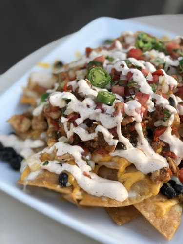
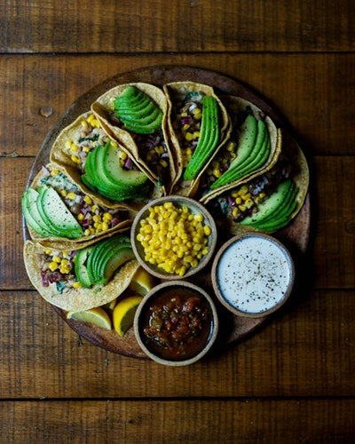

Crunch Munch

Rain or Shine 10 am to 1pm,
742 10th Ave, New York, NY 10019
Hot Line: +1 888 666 999

Rain or Shine 10 am to 1pm,
742 10th Ave, New York, NY 10019
Hot Line: +1 888 666 999
Spread tortilla chips on the prepared baking sheet; top with Cheddar cheese and dot with refried beans and ground beef mixture. Broil in the preheated oven until cheese is melted, watching carefully to prevent burning, 3 to 5 minutes. Top nachos with salsa, sour cream, black olives, green onions, and jalapeno peppers.
Soft or Hard Tacos. Taco Spice Seasoned Ground Beef.Fresh taco toppings: chopped tomatoes, bell peppers, lettuce and cilantro. Grated cheese. Sour cream. Homemade Tomato and Mango Salsa. Green Chili and Cilantro Rice.
Freshly squeezed lamon juice served with whith sugar and water